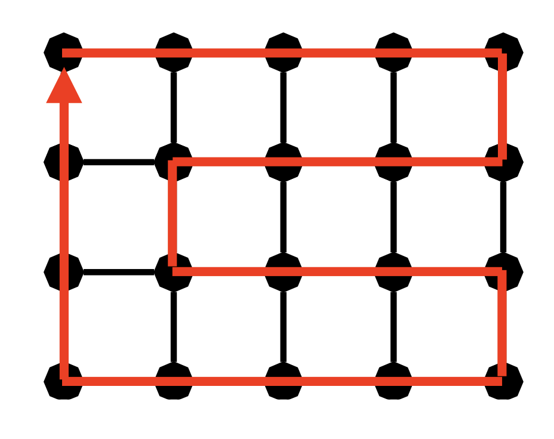

Wie in AnD gibt es Bonuspunkte (max. 0.25 Notenbonus, gibt es ab 80%)
4 verschiedene Aufgaben im Semester:
Theorieaufgaben
Code-Expert
Mini-Quizzes, bzw. Minitests
Peer-Grading
Wöchentlich Theorie & Code-Expert
Alle zwei Wochen alternierend Mini-Test, bzw. Peer-Grading
Theorieaufgaben/ CodeEx
Genau wie in AnD Theorie wöchentlich abgeben, wird von mir bewertet. CodeEx wöchentlich direkt auf der Plattform lösen. Beides wird in die Bonuspunkte einberechnet.
Mini-Test
Am Anfang jeder zweiten Übungsstunde gibt es ein Mini-Quiz. Besteht aus kleinen MC Fragen und Kurzantworten direkt in Moodle. Hierfür benötigt ihr Laptop, Tablet, Handy, …
Jede Woche werden zur Vorbereitung auf die Minitests, kleine Quizzes in genau diesem Stil auf der Moodle hochgeladen.
Je nach erreichter Punktzahl gibt es dann Bonuspunkte
Peer-Grading
Es wird eine meistens recht einfache Aufgabe sein, die ihr zunächst selber löst und auf Moodle uploaded. Habt ihr dies getan, so wird euch eine Abgabe eines anderen Studenten zugeteilt zu der ihr dann Feedback gebt. Nur falls ihr die Aufgabe selber löst und Feedback gebt, bekommt ihr Bonuspunkte.
Prüfung
Die Prüfung hat einen Theorieteil, Programmierteil und einem Multiple-Choice-/ Moodle-Teil (alles in einer Prüfung). Die Prüfungsaufgaben sind jeweils ungefähr vergleichbar mit den Theorieaufgaben, CodeEx-Aufgaben sowie den Minitests unter dem Semester.
Es ist sehr ratsam im Semester alle AnW Aufgaben ordentlich zu bearbeiten und immer am Ball zu bleiben. Im Semester habe ich persönlich am meisten für AnW gemacht, war damit aber schon sehr gut für die Prüfung vorbereitet, so dass ich mich in der Lernphase auf andere Fächer konzentrieren konnte
Themen diese Woche
Zusammenhang von Graphen
u-v Separatoren
k-Zusammenhang
Graph auf einem Knoten ist 0-zusammenhängend, bzw. nicht zusammenhängend
Vollständiger Graph Ck ist k−1 knoten-/ kantenzusammenhängend
So lange Kanten ablaufen, bis es aus dem Knoten an dem man sich befindet keine anliegenden unmarkierten Kanten mehr gibt (roter Weg in Abbildung). Nennen wir diesen Weg R
Falls es noch unmarkierte Kanten aus einem anderen Knoten v gibt, rufen wir unseren Algorithmus rekursiv von v aus auf (v hier z.B. Knoten unten links)
Der zurückgegebene Weg des rekursiven Aufrufs BG (blauer und gelber Weg) wird dann an dem Knoten v eingefügt.
Dies funktioniert wie folgt: Wir “unterbrechen” RRv und laufen von v aus erst BG ab, bevor wir weiter über R laufen.
Ikosaeder, Petersengraph, einmal für die Miniquizzes auswendig lernen, welcher Hamiltonpfad besitzt und welcher nicht. (Ikosaeder ja, Petersen nein)
Gittergraphen n×m hat Hamiltonkreis ⟺n⋅m ist gerade
Gray Codes
Hyperwürfel Graphen von Dimension d auf Knotenmenge V={0,1}d, wobei {u,v}∈E,u,v∈V⟺u,v unterscheiden sich nur an einer Stelle
Einfaches Konstruktionsverfahren für Hamiltonkreis, gezeigt in Vorlesung & Übungsstunde
{kind=link}
{kind=link}
{kind=link}